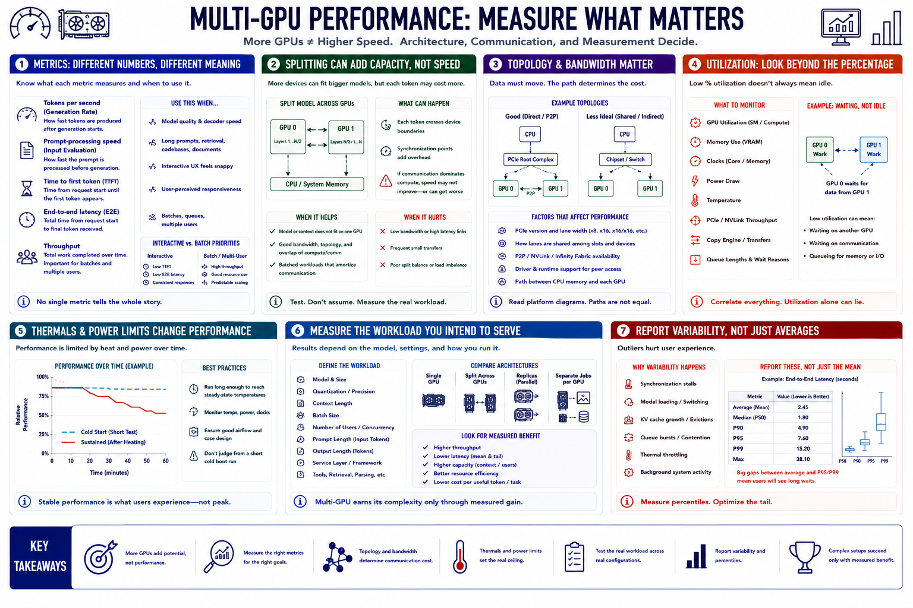

Performance Expectations
Connecting to LMS... Progress: in progress

Narration
Tokens per second measures generation rate, while prompt-processing speed measures input evaluation. Time to first token and end-to-end latency matter for interactive use. Throughput matters for batches and multiple users.
Splitting one model can increase capacity without increasing speed. Each token may cross device boundaries or require synchronization. If communication dominates compute, adding a GPU can leave performance unchanged or make it worse.
PCI Express bandwidth and topology affect movement among CPU memory and GPUs. Devices may share lanes or connect through different paths. Fast peer-to-peer features are hardware, platform, driver, and runtime dependent.
GPU utilization should be interpreted with memory, clocks, power, temperature, transfer, and queue data. One GPU at low utilization may be waiting for another device or for communication rather than lacking work.
Thermal throttling and power limits reduce sustained performance. Test long enough to reach stable temperatures. A short benchmark after a cold boot can hide airflow imbalance and power behavior.
Measure the intended workload: model, quantization, context, batch, users, prompt length, output, and service layer. Compare single GPU, different splits, replicas, and separate-job placement. Multi-GPU earns its complexity only through measured benefit.
Report variability and percentiles, not only averages. Synchronization stalls, model loading, cache growth, queue bursts, and thermal behavior may create occasional long responses that dominate user experience.